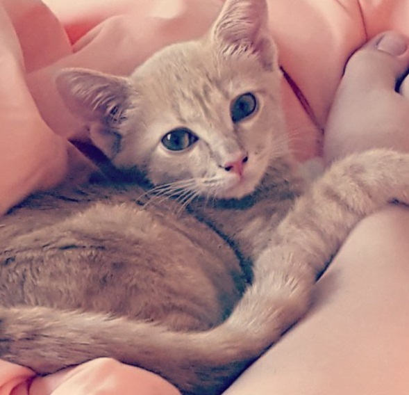
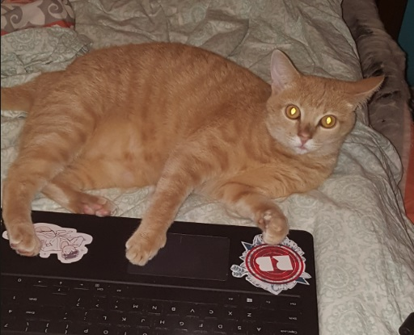

Growing up, I was in a family always surrounded by animals. Because of this, it was very hard for me when I first went off to college. I didn't have any of my animals that I had grown up with for my entire life. It was really lonely, and my anxiety was off the charts that first year in the dorms. So I made the decision that as soon as I moved into my own apartment the follwoing year, that I would adopt a cat of my own; I just couldn't live without an animal to take care of anymore!
The summer before my sophomore year, my mother and I made a visit to the AHS.
There we saw several kittens and cats of all kinds, but none of them felt like they could really be my cat.
Then, as we passed by one of the kitten houses, a little orange paw poked out of the cage to grab at me. I asked if we could open
the cage so I could see her better, and the kitten inside practically launched herself, purring, into my arms. It was
clear to me that this little kitten was my new cat.
This kitten's name was Dolla. She was three months old when I got her, and she was a return adoption. The previous owners who had adopted her had returned her because she was "too energetic". All in all, it was their loss, considering that Dolla ended up growing up to be the best cat in the world. She's almost two years old now, and I couldn't imagine my life without her in it. I highly encourage everyone who is able to take an animal into their lives to explore adoption options! There's so many animals like Dolla in shelters that need love, and would make perfect pets.
| Dolla at 3 months old |  |
|---|---|
| Dolla now, at nearly 2 years old |  |